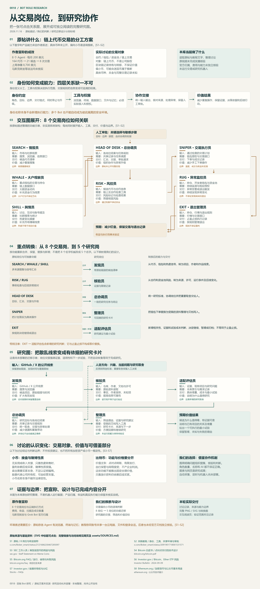
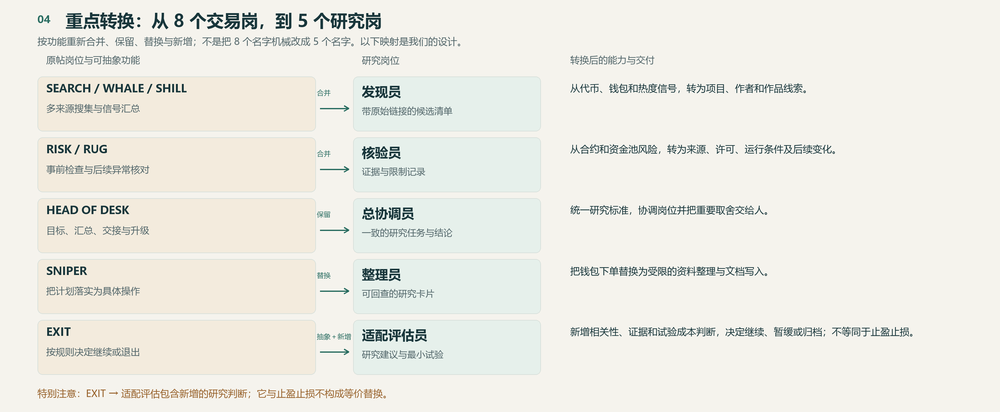

BOT ROLES / TOOLS / HANDOFFS / VALUE
定制 Bot
从岗位名称，到实际交付。
原帖用 8 个 AI 岗位组织链上代币交易。我们沿着讨论分清交易对象、价值与证据，再借五岗位研究图，说明如何组织已有能力、交接与成果。
身份定义分工，工具与权限决定执行范围，交接规则把信息变成可追溯的结果。
原帖能力与收益未实测研究机器人与定时未部署图文展示与系统运行分别记录


00 / OUR UNDERSTANDING
把已有能力组织好，形成有依据的交付。
我们关注的是目标、证据、工具权限、交接和结果。五个研究岗位帮助说明职责，一个任务也可以依次完成这些工作。
01 / FULL PICTURE
一张完整图，展开全部信息。
把交互图里点击后才出现的输入、工具、交付、价值和边界全部展开，同时保留原帖、岗位转换、讨论结论与来源。图片可独立阅读。
图片文字版：全部岗位与交付
02 / THE TRANSLATION
转换的是功能，不是岗位名字。
多路搜集合并、检查与监控合并、保留总协调、替换执行对象，再补上研究适配判断。点选图中任一行，可查看它保留了什么、改变了什么。


03 / INTERACTIVE MAP
保留原来的交互图，逐岗对照。
顶部切换交易与研究场景，点击岗位查看输入、所需工具和预期价值。连线是基于文字整理的功能关系，不代表已运行系统。
原交互图已独立导出，状态保存在当前浏览器中；它不连接交易账户，也不执行搜集或写库操作。
04 / HOW THE DISCUSSION MOVED
从“他在交易什么”，到“我们能借鉴什么”。
保留理解过程中的问题与修正，避免只留下一个漂亮的岗位图。
阅读完整讨论与推理边界 ↗05 / EVIDENCE & LIMITS
宣称、设计、实际交付，分别记录。
教程称同一账号的 Bot 共享云电脑、文件和登录会话；这与原帖“各自的浏览器、终端和记忆”的表达需要区分。该产品的官方归属与完整架构仍未独立核验。